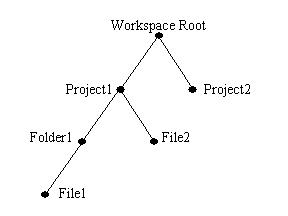

| Eclipse Corner Article |

Summary
Many tools and user interface elements are interested in processing resource changes as they happen. For example, the task list wants to update new or changed markers, the navigator wants to reflect added and deleted resources, and the Java compiler wants to recompile modified Java files. Such notifications are potentially costly to compute, manage and broadcast. The Eclipse Platform resource model includes a series of mechanisms for efficiently notifying clients of resource changes. This article outlines these facilities and gives some examples of their use.
By John Arthorne, OTI
August 23, 2002
Updated November 23, 2004 for Eclipse 3.0
The primary method for Eclipse plug-ins to be notified of changes to resources is by installing a resource change listener. These listeners are given after-the-fact notification of what projects, folders and files changed during the last resource changing operation. This provides a powerful mechanism for plug-ins to keep their domain state synchronized with the state of the underlying workspace. Since listeners are told exactly what resources changed (and how they changed), they can update their model incrementally, which ensures that the time taken by the update is proportional to the size of the change, not the size of the workspace.
Listeners must implement the
IResourceChangeListener interface, and are registered using the method
addResourceChangeListener on
IWorkspace. It is also important to remove your resource change listener when it is no longer
needed, using IWorkspace.removeResourceChangeListener.
During a resource change notification, the workspace is locked to prevent further modification
while the notifications are happening. This is necessary to ensure that all listeners are notified
of all workspace changes. Otherwise, a change made by one listener would have to be broadcast
to all other listeners, easily creating the possibility of an infinite loop. There is a special exception
to this rule for the PRE_BUILD and POST_BUILD
event types that will be discussed later on.
IWorkspace workspace = ResourcesPlugin.getWorkspace();
IResourceChangeListener listener = new IResourceChangeListener() {
public void resourceChanged(IResourceChangeEvent event) {
System.out.println("Something changed!");
}
};
workspace.addResourceChangeListener(listener);
//... some time later one ...
workspace.removeResourceChangeListener(listener);
So when exactly are these change events broadcasted? In our preliminary sketch, we said that they occur after a "resource changing operation". What does this mean? Certain methods in the resources plug-in API directly modify resources in the workspace. The most common examples are creating, copying, moving and deleting files and folders, and modifying file contents. Methods that change resources have the following key phrase in their API Javadoc:
* This method changes resources; these changes will be reported * in a subsequent resource change event.
Every method in the resources API that contains such a phrase will trigger the
broadcast of a resource change event to all listeners. The only exception is when
the operation doesn't actually change anything in the workspace, for example if
the operation fails or is canceled before any real changes occur. In this case
no change events are broadcast. It is important to note
that the broadcast does not necessarily occur immediately after the method completes.
This is because a resource changing operation may be nested
inside of another operation. In this case, notification only occurs after the top-level
operation completes. For example, calling IFile.move may trigger calls to
IFile.create to create the new file, and then IFile.delete
to remove the old file. Since the creation and deletion operations are nested inside
the move operation, there will only be one notification.
IWorkspaceRunnable, and passing it to
IWorkspace.run(IWorkspaceRunnable). Wrapping high-level operations inside
an IWorkspaceRunnable can lead to a substantial performance improvement,
because it ensures that only one resource change broadcast occurs, instead of potentially thousands.
IWorkspaceRunnable mechanism. In this case, a single resource change event
will be broadcast, indicating that one project and ten files have been created. To keep it simple,
progress monitoring and exception handling have been omitted from this example.
IWorkspace workspace = ResourcesPlugin.getWorkspace();
final IProject project = workspace.getRoot().getProject("My Project");
IWorkspaceRunnable operation = new IWorkspaceRunnable() {
public void run(IProgressMonitor monitor) throws CoreException {
int fileCount = 10;
project.create(null);
project.open(null);
for (int i = 0; i < fileCount; i++) {
IFile file = project.getFile("File" + i);
file.create(null, IResource.NONE, null);
}
}
};
workspace.run(operation, null);
Since Eclipse 3.0, it is no longer guaranteed that an
IWorkspaceRunnable will prevent notifications for the entire duration
of an operation. The workspace can now decide to perform notifications during an operation
to ensure UI responsiveness. This is particularly important when several workspace
modifying operations are running simultaneously. The use of IWorkspaceRunnable is still strongly
encouraged, functioning as a strong hint to the workspace that a set of changes
is occurring that can be batched. Also in Eclipse 3.0, a background equivant to
IWorkspaceRunnable was introduced.
WorkspaceJob will batch a set of workspace changes that occur
inside a Job running in the background. Read the
Concurrency infrastructure documentation for more details on jobs.
A very powerful feature of the resource change infrastructure is that listeners will even
be notified of changes that occur outside the workspace API. If some external editor
or tool makes changes to resources in the workspace directly from the filesystem, resource
change listeners will still receive the same notification describing exactly what changed and
how they changed. The drawback is that since most operating systems don't have such
a resource change mechanism of their own, the eclipse workspace may not
"discover" the change until later on. Specifically, the workspace will not
send the notification until someone performs a IResource.refreshLocal
operation on a resource subtree that has changed in the filesystem. After the
refreshLocal operation, the workspace will send resource change notification
to all listeners, describing everything that has changed since the last local refresh.
Now that we know how to add listeners and when to expect them to be called,
let's take a closer look at what these change events look like. The object passed
to a resource change listener is an instance of
IResourceChangeEvent. The most important bits of information in the event
are the event type, and the resource delta. The event type is simply an integer that
describes what kind of event occurred. Listeners are typically mainly interested in the
POST_CHANGE event type, and that is the one we will focus on here.
The resource delta is actually the root of a tree of IResourceDelta objects.
The tree of deltas is structured much like the tree of IResource objects that
makes up the workspace, so that each delta object corresponds to exactly one resource.
The top-most delta object, provided by the event object, corresponds to
the IWorkspaceRoot resource obtained by IWorkspace.getRoot.
The resource delta hierarchy will include deltas for all affected resources that existed prior to the
resource changing operation, and all affected resources that existed after the operation.
Think of it as the union of the workspace contents before and after a particular operation,
with all unchanged sub-trees pruned out. Each delta object provides the following information:
In the case where a resource has moved, the delta for the destination also supplies the path it moved from, and the delta for the source supplies the path it moved to. This allows listeners to accurately track moved resources.
To give an example of the structure of a resource delta, assume we begin with a workspace
with the following contents:

Now, say we perform a workspace operation that does all of the following changes:
It is worth giving a bit more detail about what the delta change flags (
IResourceDelta.getFlags()), are all about. More than one flag
may be applicable for a given resource, in which case the flag values are masked
together to form a single flag integer. The following table summarizes the different
flags and what they signify:
| Constant (on IResourceDelta) | Applicable resources | What it means |
CONTENT |
IFile, IFolder |
The filesystem modification timestamp has changed since the last notification.
IResource.touch() will also trigger a content change notification, even though
the content may not have changed in the file system. |
ENCODING |
IFile, IFolder, IProject |
The character encoding for a file, or for the files inside a container, have changed. For listeners that care about the character content of the file, as opposed to the raw bytes, this should typically be treated the same as a content change. |
MOVED_FROM |
IFile, IFolder, IProject |
The resource was moved from another location. You can find out
the path it came from by calling IResourceDelta.getMovedFromPath. |
MOVED_TO |
IFile, IFolder, IProject |
The resource was moved to another location. The location it was moved to is
indicated by IResourceDelta.getMovedToPath. |
OPEN |
IProject |
The project has either been opened or closed. If the project is now open, then it was previously closed, and vice-versa. |
TYPE |
IFile, IFolder |
The resource has changed type. If the resource was previously a file then it is now a folder, and vice-versa. |
MARKERS |
All | The resource's markers have changed. Markers are annotations to resources such as
breakpoints, bookmarks, to-do items, etc. The method IResourceDelta.getMarkerDeltas()
is used to find out exactly which markers have changed. |
REPLACED |
IFile, IFolder, IProject |
The resource has been replaced by a different resource at the same location (i.e., the resource has been deleted and then re-added). |
DESCRIPTION |
IProject |
The project description has changed. |
SYNC |
All | The resource's synchronization information has changed. Sync info is used to determine
if a resource is in sync with some remote server, and is not typically of interest to local tools.
See the API interface
ISynchronizer
for more details. |
Earlier on we said that the principal type of event is the POST_CHANGE event.
However, there are some circumstances where listening to other event types is necessary. You can
register for particular event types using the API method
IWorkspace.addResourceChangeListener(IResourceChangeListener, int),
where the supplied integer is a bit-mask of all event types you want your listener to receive.
The first category of special events are pre-change notifications. Since the POST_CHANGE
event is broadcast after-the-fact, some valuable information that the listener needs may be missing. In these
cases, use the PRE_CLOSE and PRE_DELETE events, broadcast before a
project is closed or deleted. The project in question can be obtained from
IResourceChangeEvent.getResource. There is no resource delta for these event types. These
events allow listeners to do important cleanup work before a project is removed from memory. These
events do not allow listeners to veto the impending operation.
The other special event types are associated with the workspace build mechanism.
Incremental project builders sometimes require special initialization code to be executed
before all builds happen, and/or special post-processing after all builds are complete. For
these reasons, there are PRE_BUILD and POST_BUILD event types.
These events are similar to POST_CHANGE, as they also provide a resource delta tree
describing what has changed since the start of the operation. These events are broadcast
periodically even when autobuild is turned off. Since Eclipse 3.0, these build events no
longer occur in the same thread that modified the workspace. Instead, they always
occur in the same thread in which the actual build occurs. Since autobuild occurs in
a background thread in Eclipse 3.0, so do the surrounding pre- and post-build events.
Another special characteristic about these events is that listeners are allowed to
modify resources during the notification. This feature should be used sparingly,
however, as changing resources during the change event sequence will add extra
overhead to every operation.
The event types that include resource deltas (POST_CHANGE,
PRE_BUILD, and POST_BUILD), notify
listeners of all changes that have happened in the workspace between two discrete
points in time. It is sometimes difficult to understand what time interval is covered by
each of these three event types. Conceptually, you can think of the resources plug-in
"remembering" what the workspace looked like at certain points in time, and a
resource delta describes the differences between two of these points. The following
outline of a workspace operation describes what time interval is covered by each of
the event types:
 ).
). ).
).POST_CHANGE listeners of all changes between
and .).).PRE_BUILD listeners of all changes between
and . ).
).POST_BUILD listeners of all changes between
and . ).
).POST_CHANGE listeners of all changes between
and .).
It is important to note that the time intervals covered by the different event types are overlapping. It is generally
not useful for a single listener to listen to more than one of these event types at once. Choose the event type
that applies for your situation, and register for only that event type when adding your listener. If you do need
to listen to more than one event type, keep in mind that the provided deltas will describe overlapping sets
of changes. This is one of the reasons why POST_CHANGE is the most generally useful
event type, because its delta will always describe all changes since the last POST_CHANGE
event notification. PRE_BUILD and POST_BUILD events, on
the other hand, will not always receive notification of every change.
Performance. Listeners should be lightweight and fast. Change notifications can occur quite frequently during typical use of the platform, so your listener must do its work in a timely fashion. This is not an appropriate place, for example, to be contacting servers or performing disk I/O. If you have expensive operations that can be triggered as a result of resource changes, consider posting the work to a background thread, or queuing the work until a time that is more convenient for your users. For example, the "Java Development Tools" (JDT) plug-ins provide a search engine that indexes Java source and JAR files to allow for more efficient searches. When these files change, the search engine must rebuild the indexes for these files. The JDT plug-ins use a resource change listener to collect the list of changed resources, and then posts that list to a background thread that rebuilds the indexes.
In the interest of making resource change listeners faster, some convenience methods exist
on IResourceDelta and IResourceChangeEvent that allow you to
do your updates faster. If you are only interested in changes to a single resource (or a very small set
of resources), you can use IResourceDelta.findMember(IPath) to quickly locate the
resource you are interested in updating. The supplied path is considered as relative to the path
of the resource delta that it is called on.
Another common case is resource change listeners that are only interested in processing changes
to markers (
IMarker objects). These listeners can use
IResourceChangeEvent.findMarkerDeltas to quickly collect all changed markers
of a given type.
There is also a visitor mechanism (IResourceDelta.accept(IResourceDeltaVisitor))
for easily processing all changed resources in a given sub-tree. However, visitors should only
be used where appropriate. Using a visitor to process two or three resources doesn't
make sense, as the overhead of visiting the entire delta tree is incurred for no good reason.
Since it's so easy to write a visitor, there is a tendency for programmers to use them too
liberally, even in cases where they only want to process a well-defined subset of a tree.
The return value from the visitor's visit method is used to indicate if that resource's children should be
traversed. This can be used to short-circuit the traversal to avoid visiting sub-trees that you know
you are not interested in.
Thread safety. There are some multi-threading issues to keep in mind when
writing listeners. First, you have no control over what thread your listener will run in.
Workspace operations can occur in any thread, and resource change listeners will
run in whatever thread that triggered the operation. So, if some of your update code
must be run in a particular thread, you'll have to make sure your code gets
posted to that thread. The most common example of this is UI updates. With the
Standard Widget Toolkit (SWT), the UI toolkit that is included with Eclipse, there is
only a single UI thread per display. If your resource change
listener needs to update the UI, you will need to use the methods syncExec
or asyncExec in class org.eclipse.swt.widgets.Display to
post the update code to the UI thread.
If any of your update code runs asynchronously (i.e., you used asyncExec or some
similar mechanism to post your code to another thread), there is another consideration to
keep in mind. The resource delta objects supplied to your listener are designed to "expire"
when the resourceChanged method returns. So, if you pass references
to IResourceDelta objects to another thread, they may cause failures if
they are accessed after the listener method has returned back in the other thread. The reason
for this resource delta "expiry date", is to ensure that listeners don't hold onto resource delta
references indefinitely. These delta structures are potentially quite large, and if a listener
holds onto them, it essentially causes a memory leak because these structures can no longer
be garbage collected.
TableViewer that contains an index of text files. The listener would normally
process added and removed text files in a similar way, but for the sake of space we'll just
deal with changed files here.
public class DocIndexUpdater implements IResourceChangeListener {
private TableViewer table; //assume this gets initialized somewhere
private static final IPath DOC_PATH = new Path("MyProject/doc");
public void resourceChanged(IResourceChangeEvent event) {
//we are only interested in POST_CHANGE events
if (event.getType() != IResourceChangeEvent.POST_CHANGE)
return;
IResourceDelta rootDelta = event.getDelta();
//get the delta, if any, for the documentation directory
IResourceDelta docDelta = rootDelta.findMember(DOC_PATH);
if (docDelta == null)
return;
final ArrayList changed = new ArrayList();
IResourceDeltaVisitor visitor = new IResourceDeltaVisitor() {
public boolean visit(IResourceDelta delta) {
//only interested in changed resources (not added or removed)
if (delta.getKind() != IResourceDelta.CHANGED)
return true;
//only interested in content changes
if ((delta.getFlags() & IResourceDelta.CONTENT) == 0)
return true;
IResource resource = delta.getResource();
//only interested in files with the "txt" extension
if (resource.getType() == IResource.FILE &&
"txt".equalsIgnoreCase(resource.getFileExtension())) {
changed.add(resource);
}
return true;
}
};
try {
docDelta.accept(visitor);
} catch (CoreException e) {
//open error dialog with syncExec or print to plugin log file
}
//nothing more to do if there were no changed text files
if (changed.size() == 0)
return;
//post this update to the table
Display display = table.getControl().getDisplay();
if (!display.isDisposed()) {
display.asyncExec(new Runnable() {
public void run() {
//make sure the table still exists
if (table.getControl().isDisposed())
return;
table.update(changed.toArray(), null);
}
});
}
}
}
Observe how the findMember convenience method is used to find the child
delta for the documentation folder, and then a visitor is used to collect the changes in that sub-tree.
It is safe to use asyncExec here, because we have
already pulled the relevant information out of the resource deltas. You should always use
the isDisposed check inside an asyncExec. Even if the table
exists at the time the asyncExec is called, there may be another item in the event
queue that will dispose the table before this event can be processed.
When plug-in writers implement their first resource change listener, they often encounter a dilemma caused by Eclipse's lazy plug-in loading behavior. Since plug-in activation may occur well after the workspace has started up, there is no opportunity add a resource change listener when the workspace is first started. This causes a "blind spot" for listeners, because they cannot process changes that occur between the time of workspace creation and the time when their plug-in is activated.
The solution to this problem is to take advantage of the save participant mechanism.
Save participants implement the
ISaveParticipant interface, and are installed using IWorkspace.addSaveParticipant.
The main purpose of save participants is to allow plug-ins to save their important
model state at the same time that the workspace saves its state. This ensures
that the persisted workspace state stays synchronized with any domain model
state that relies on it. Once a save participant is registered with the workspace,
subsequent calls to addSaveParticipant will return an
ISavedState object. By passing a resource change listener to
ISavedState.processResourceChangeEvents, participants are given
the opportunity to process the changes that have occurred since the last save
occurred. This fills in the "blind spot" between workspace startup and activation
of the plug-in that the listener belongs to. To find out about other facilities
provided by the save participant mechanism, read the API Javadoc for
ISaveParticipant,
ISavedState, and
ISaveContext.
Builders are another mechanism provided by the platform core for processing resource changes. Where change listeners are intended as a light-weight update mechanism, builders are designed to be a more powerful and flexible way of processing resource changes. Although builders are discussed in greater detail in a companion builder article, it is useful to know about the major differences between resource change listeners and builders:
These differences aside, the principle behind project builders and resource
change listeners is the same. Builders are provided with a similar IResourceDelta
hierarchy that describes what has changed since the last time that builder was
called. This gives builders a chance to incrementally update the resources they
operate on in response to changes made by others. For more details on builders,
see the eclipse.org article Project
Natures and Builders.
The Eclipse workspace provides a powerful suite of tools to allow plug-ins to keep notified and up to date when resources change. By installing a resource change listener, plug-ins are incrementally notified after any set of changes to the workspace, and are supplied with a resource delta tree that describes all the changes that have happened. Resource change listeners can also be notified when projects are about to be deleted or closed, or before and after auto-builds happen. The save participant mechanism can be used for notification about what happened before your plug-in was activated. The builder framework, discussed in more detail in another article, provides a more powerful mechanism for processing changed resources in a project.
Java and all Java-based trademarks and logos are trademarks or registered trademarks of Sun Microsystems, Inc. in the United States, other countries, or both.